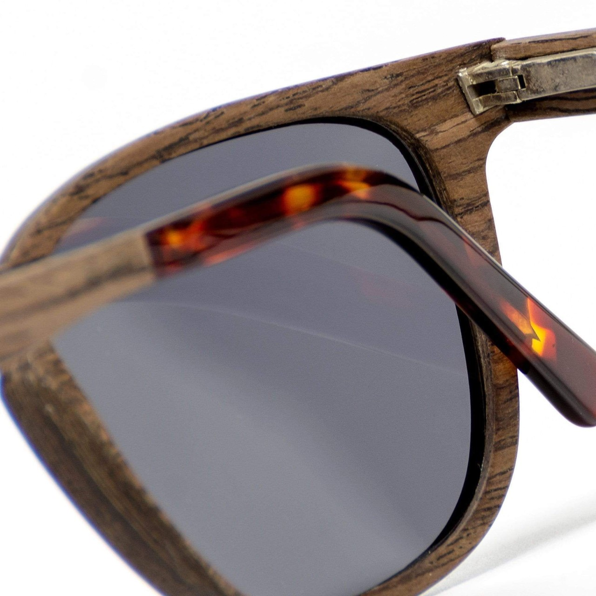
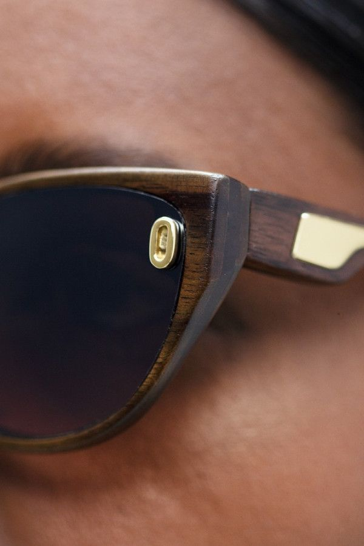
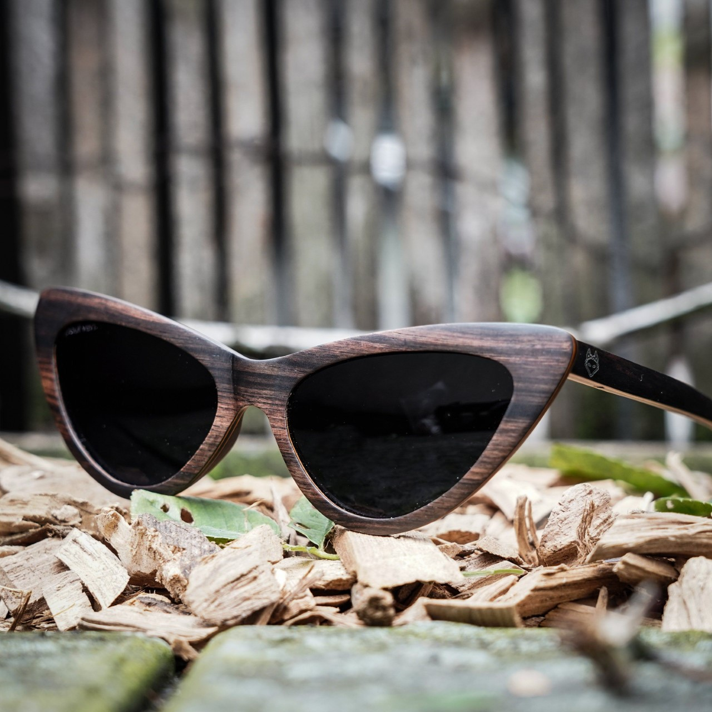
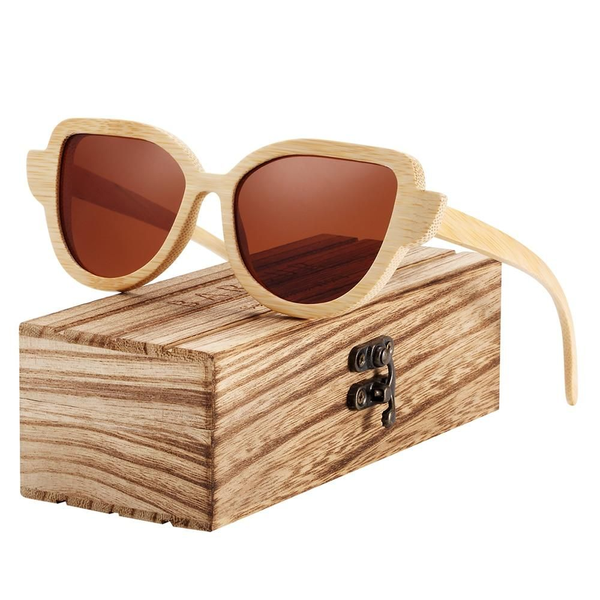

OBJETIVOS DE TRABAJO
-
Lentes ecofriendly
La venta de los lentes EcoCat promovera al cuidado del medio hambiente gracias a nuestra especialidad.
 -
Garantía de calidad
Garantía de calidad en productos traidos del extranjero 100% originales.
 -
Expresividad
podemos hacer real el sueño de poder contribuir al medio hambiente.
 -
Proceso creativo
Tratar que el proceso de creación sea ecologico y asi llegar a un resultado óptimo.
